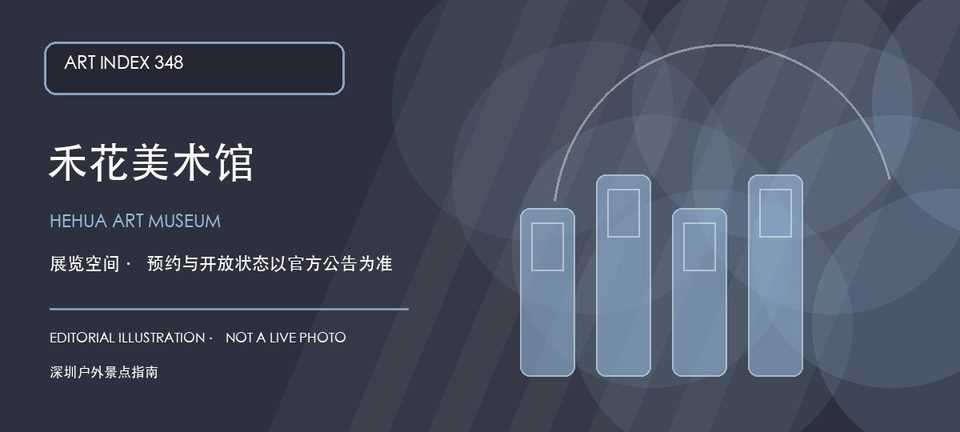

适合谁
适合关注社区型美术馆和小型展览的人；临时到访者应预留地址核验和访客登记时间。

SHENZHEN GUIDE · 348
龙岗区平湖街道禾花社区平吉大道北159号恒路E时代大厦2层 · 美术馆 / 艺术空间
禾花美术馆位于平湖禾花社区恒路E时代大厦二层，官方名录将它列为龙岗区美术馆。它处在社区、产业楼宇和城市更新交界处，适合把一次看展与平湖片区观察组合，但展览、开放和楼宇门禁不宜凭名称推断。出发前先确认当期展讯、楼层入口、预约和摄影边界。
WHY GO
适合关注社区型美术馆和小型展览的人；临时到访者应预留地址核验和访客登记时间。
先联系场馆确认恒路E时代大厦二层、开放日和登记要求，再进入主展；不在楼宇办公区域停留或拍摄。
公共交通先到平湖街道禾花社区平吉大道北159号恒路E时代大厦，再按禾花美术馆公开入口导航；出发前核对楼宇门禁和开放时段。
自驾优先使用恒路E时代大厦或周边正规停车场；车位、收费和社会车辆准入以现场公告为准，不在平吉大道及消防通道临停。
全年可安排，室内展览适合高温或降雨日；展期和楼宇运营安排比季节更影响体验。
NEARBY IDEAS
 编辑配图·非现场实景
编辑配图·非现场实景
深圳市百师园非物质文化遗产博物馆位于平湖，多门类非遗作品、传承人故事和活态展示集中出现，重点是比较不同技艺的材料与学习方式。
 编辑配图·非现场实景
编辑配图·非现场实景
平湖生态园位于平湖街道锦富路25号，约248公顷的大尺度城市生态园以山林、水体和果园景观承接平湖片区的郊野休闲需求。
 编辑配图·非现场实景
编辑配图·非现场实景
甘坑苗坑水库碧道位于平湖街道平湖生态园甘坑—苗坑水库，约9.63公里的郊野型湖库碧道连接甘坑、苗坑两座水库，以库尾慢行道路、林下坐凳、湿地和季节花木组成平湖生态园内的长线山水游线。